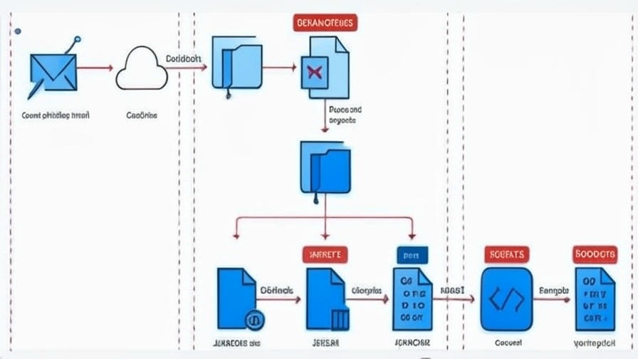

🚨 MirrorFace / APT10 est (encore) de retour
05 Mai 2025
Cyber
Et cette fois, ils ne se limitent plus à l’Asie. → Japon 🇯🇵, Taïwan 🇹🇼, et maintenant… Europe centrale.
Il y a quelques semaines, une organisation japonaise a repéré une nouvelle campagne signée MirrorFace (aussi appelé Earth Kasha), un sous-groupe d’APT10. (On suppose qu’il s’agit d’un acteur d’un plus grand pays asiatique, sans le nommer de ma part 🥷)
🧵 De l’infection à l’exfiltration :
Accès initial
→ Emails de spear-phishing envoyés depuis des boîtes compromises
→ Liens OneDrive vers des fichiers ZIP piégés
→ Dedans : fichiers Excel avec macros (RoamingMouse)
Exécution ☠️
→ Lancement des macros = installation du backdoor ANEL
→ Discret, persistant, parfait pour la reconnaissance
Reconnaissance 👺
→ Collecte de :
▪️ Captures d’écran
▪️ Infos système + réseau
Escalade si cible stratégique
→ Déploiement de NOOPDOOR
→ Utilisation de DNS over HTTPS pour masquer les communications
Évasion & persistance 🫀
→ Contournement via Windows Sandbox + VS Code
→ Payload qui s’adapte selon la config (ex : McAfee présent ?)
→ Exploits ciblant Fortinet, Citrix, Array Networks
📍 Depuis 2024 : cap sur l’Europe. Une institution diplomatique en Europe centrale a été visée. → Même tactiques. Même outils. Nouveau terrain de jeu. Preuve que ce workflow, rodé en Asie, peut être déployé partout pour infiltrer les structures sensibles — diplomatie, administrations, etc.
🧠 Mon point de vue :
Ce type d’acteur est persistant, adaptable, et très structuré.
➡️ Les signaux faibles doivent devenir notre priorité.
➡️ DNS over HTTPS ? À surveiller activement.
➡️ Les charges malveillantes sont désormais context-aware.
La défense doit évoluer aussi vite que l’attaque.
♻️ Repartage si ça peut aider un collègue blue team
Hashtags :